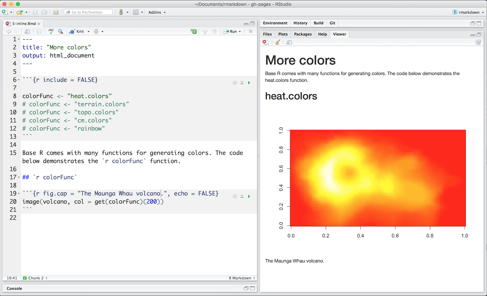
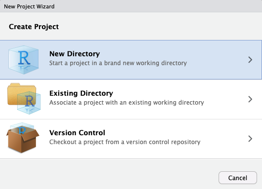

Chapter 6 Scientific Publishing with Quarto in R
6.1 Publishing with Quarto
Yihui Xie, who has written several of the most essential packages in this space, including knitr, first introduced R Markdown in 2012. Xie presents R Markdown as “an authoring framework for data science” in his book R Markdown: The Definitive Guide. The .Rmd file is used to automatically “save and execute code, as well as generate high-quality reports.” Documents and presentations in HTML, PDF, Word, Markdown, Powerpoint, LaTeX, and more formats are all supported. Homework assignments, journal articles, full-length books, formal reports, presentations, web pages, and interactive dashboards are just a few of the possibilities he offers, with examples of each. It is an understatement to suggest that it is a flexible and dynamic environment.
Quarto is the next generation of RMarkdown for publishing, including dynamic and static documents and multi-lingual programming language support. With Quarto you can create documents, books, presentations, blogs or other online resources.
6.2 Markdown Basics
Quarto is based on Pandoc and uses its variation of markdown as its underlying document syntax. Pandoc markdown is an extended and slightly revised version of John Gruber’s Markdown syntax.
6.3 R Markdown Syntax
R Markdown files consist of the following elements:
- A metadata header that uses the YAML syntax to configure multiple output choices.
- Markdown-formatted content in the body
- Three
backticksseparate code chunks, which are separated by a curly braced block that identifies the language and sets chunk settings.
R Markdown also allows users to embed code expressions in the prose by enclosing them in single backticks. A minimal .Rmd example is included below. This is based on the Xie’s sample, which I’ve modified to demonstrate all of the elements mentioned above.
---
02: title: "Hello Dinsho"
03: author: "Mesfin Diro"
04: output: html_document
05: ---
06:
07: This is a paragraph in an _R Markdown_ document.
08: Below is a code chunk:
09:
10: ```{r fit-plot, echo=TRUE}
11: fit = lm(dist ~ speed, data = cars)
12: b = coef(fit)
13: plot(cars)
14: abline(fit)
15: ```
16:
17: The slope of the regression is `r round(b[2], digits = 3)`.R Markdown provides an authoring framework for data science. You can use a single R Markdown file to both
- save and execute code
- generate high quality reports that can be shared with an audience
R Markdown documents are fully reproducible and support dozens of static and dynamic output formats. This is an R Markdown file, a plain text file that has the extension
.Rmd.
 - The file contains three types of content: 1. An (optional) YAML header surrounded by
- The file contains three types of content: 1. An (optional) YAML header surrounded by ---s 2. R code chunks surrounded by ```s 3. text mixed with simple text formatting
6.4 Rendering output
- To generate a report from the file, run the render command:
library(rmarkdown)
render("example_1.Rmd)- Better still, use the “Knit” button in the RStudio IDE to render the file and preview the output with a single click or keyboard shortcut.r

R Markdown with Knit button in RStudio
- R Markdown generates a new file that contains selected text, code, and results from the .Rmd file. The new file can be a finished web page, PDF, MS Word document, slide show, notebook, handout, book, dashboard, package vignette or other format.
6.5 How it works

R Markdown with Knit button in RStudio
When you run render, R Markdown sends the
.Rmdfile to knitr, which runs all of the code chunks and generates a new markdown(.md)document with the code and its output.Knitr generates a markdown file, which is then processed by pandoc, which generates the final format.
While this may appear hard, R Markdown simplifies the process by combining all of the above processing into a single render function.
6.6 Code Chunks
- The R Markdown file below contains three code chunks:
R Markdown with Knit button in RStudio
- You can quickly insert chunks like these into your file with
- the keyboard shortcut Ctrl + Alt + I (OS X: Cmd + Option + I)
- the Add Chunk
 command in the editor toolbar or or by typing the chunk delimiters
command in the editor toolbar or or by typing the chunk delimiters {r}__ and __.
- When you render your .Rmd file, R Markdown will run each code chunk and embed the results beneath the code chunk in your final report.
6.7 Inline Code
- Code results can be inserted directly into the text of a
.Rmdfile by enclosing the code with`r`. The file below uses`r`twice to call colorFunc, which returns “heat.colors”.

- Using
`r`makes it easy to update the report to refer to another function.
6.8 Code Languages
knitr can execute code in many languages besides R. Some of the available language engines include:
- Python
- SQL
- Bash
- Rcpp
- Stan
- JavaScript
- CSS
To process a code chunk using an alternate language engine, replace the
rat the start of your chunk declaration with the name of the language:
{bash}
6.9 Academic Journals
Academic publications frequently have severe formatting requirements for submitted articles. Few journals support R Markdown submissions directly at the moment, however several do support the LaTeX format. While you can convert R Markdown to LaTeX, different journals have different typesetting requirements and LaTeX styles, so it may be time-consuming and frustrating for all authors who want to use R Markdown to figure out the technical details of how to properly convert a R Markdown-based paper to a LaTeX document that meets the journal requirements.
The rticles package is designed to simplify the creation of documents that conform to submission standards. A suite of custom R Markdown templates for popular journals is provided by the package
6.9.1 Get started
You can install and use rticles from CRAN as follows:
# Install from CRAN
install.packages("rticles")
# Or install development version from GitHub
devtools::install_github("rstudio/rticles")The development version of the package from GitHub is recommended because it has the most recent versions as well as various new templates.
If you’re using RStudio, go to File -> New File -> R Markdown to access the templates. This will bring up a dialog window where you may choose from a number of different templates.

The R Markdown template window in RStudio showing available rticles templates
If you are using the command line, you can use the rmarkdown::draft() function, which requires you to specify a template using the journal short name, e.g.,
rmarkdown::draft(
"JSSArticle.Rmd", template = "jss", package = "rticles"
)6.9.2 rticles templates
The rticles package provides templates for various journals and publishers, including:
- R Journal articles
- CTeX documents
- JSS articles (Journal of Statistical Software)
- ACM articles (Association of Computing Machinery)
- ACS articles (American Chemical Society)
- AMS articles (American Meteorological Society)
- PeerJ articles
- Elsevier journal submissions
- AEA journal submissions (American Economic Association)
- IEEE Transaction journal submissions
- Statistics in Medicine journal submissions
- Royal Society Open Science journal submissions
- MDPI journal submissions
- Springer journal submissions
The full list is available within the R Markdown templates window in RStudio, or through the function rticles::journals():
library(rticles)
rticles::journals()## [1] "acm" "acs" "aea" "agu"
## [5] "ajs" "amq" "ams" "arxiv"
## [9] "asa" "bioinformatics" "biometrics" "copernicus"
## [13] "ctex" "elsevier" "frontiers" "glossa"
## [17] "ieee" "ims" "informs" "iop"
## [21] "isba" "jasa" "jedm" "joss"
## [25] "jss" "lipics" "lncs" "mdpi"
## [29] "mnras" "oup_v0" "oup_v1" "peerj"
## [33] "pihph" "plos" "pnas" "rjournal"
## [37] "rsos" "rss" "sage" "sim"
## [41] "springer" "tf" "trb" "wellcomeor"6.10 Essential commands with Quarto
Quarto is a multi-language, next-generation version of R Markdown from RStudio, and includes dozens of new features and capabilities while at the same being able to render most existing Rmd files without modification. Like R Markdown, Quatro uses a variation of Markdown as its underlying syntax. Essential markdown commands include those for emphasis, headers, lists, links, and images. A reminder of these is included in RStudio (“Help” -> “Markdown Quick Reference”). It is your choice as to whether you want to use the visual or source editor. But either way, it is good to understand these essentials because it will not always be possible to use a visual editor, for instance if you are quickly looking at a Quarto document in GitHub. Also RStudio is sometimes laggy and it can be useful to use a text editor, such as Sublime Text, or VS Code
The following is a Quarto document with the extension .qmd (on the left) along with its rendered version as HTML (on the right). You could also choose to render it into other formats like PDF, MS Word, etc.
6.10.1 Rendering
Use the Render button in the RStudio IDE to render the file and preview the output with a single click Note that documents can also be rendered from the R console via the quarto package:
install.packages("quarto")
quarto::quarto_render("hello.qmd")When rendering, Quarto generates a new file that contains selected text, code, and results from the .qmd file. The new file can be an HTML, PDF, MS Word document, presentation, website, book, interactive document, or other format.
6.11 Creating Journal Articles
In journal article formats, fine-grained control of generated output, as well as the ability to use Journal-specific commands and directives, are frequently required. This can be accomplished for Quarto formats by providing custom Pandoc templates (LaTeX and/or HTML). These templates are frequently a mash-up of journal-specific LaTeX directives and Pandoc-required directives. This article will demonstrate how to create custom Journal templates that are compatible with Pandoc and produce high-fidelity publisher-ready output.
6.12 Creating books
Quarto Books are manuscripts that combine multiple documents (chapters). Books can be produced in a variety of:
- HTML
- MS Word
- EPUB
HTML books are simply a subset of Quarto Websites and, as such, support all of the same features as websites, including full-text search. The most significant distinction is that HTML books use chapter numbers and thus support Cross References between chapters.
Quarto books can be published to a wide variety of destinations including GitHub Pages, Netlify, RStudio Connect, or any other static hosting service or intranet web server. See the documentation on Publishing Websites for additional details.
::: {#fig-book layout=“[50,-2,50]”,layout-ncol=2 layout-valign=“bottom”}


:::
Then, provide a directory name and other relevant options for the book: